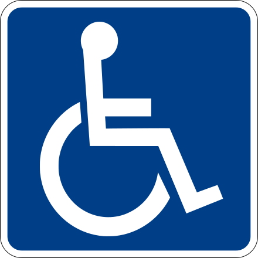

 Accesibilidad
La accesibilidad o accesibilidad universal es el grado en el que todas las personas pueden utilizar un objeto, visitar un lugaro acceder a un servicio, independientemente de sus capacidades técnicas, cognitivas o físicas. Es indispensable e imprescindible, ya que se trata de una condición necesaria para la participación de todas las personas independientemente de las posibles limitaciones funcionales que puedan tener.
Legislación
Muchos países cuentan con leyes de obligado cumplimiento que permiten velar por la accesibilidad de las páginas de su administración pública o bien de sitios de empresas que ofrecen servicios y productos para ella. A continuación se verán las más importantes.
Europa
En Europa, lo más interesante en materia de accesibilidad se encuentra en los planes eEurope y en el texto de la "Carta de los Derechos Fundamentales de la Unión Europea". En dicha carta deja claro que se prohíbe toda discriminación, y en particular la ejercida por razón de sexo, raza, color, orígenes étnicos o sociales, características genéticas, lengua, religión o convicciones, opiniones políticas o de cualquier otro tipo, pertenencia a una minoría nacional, patrimonio, nacimiento, discapacidad, edad u orientación sexual.
Irlanda
En Irlanda, el Acta para la Igualdad en el Empleo de 1998 y el Acta para la Igualdad de Estatus de 2000 proporcionan el marco legal para promover la accesibilidad. Además, se exige que los sitios web de los departamentos de la Administración Pública cumplan los criterios de accesibilidad de las pautas WAI.
Portugal
En otros países del continente también se están desarrollando medidas más o menos tempranas. Portugal es uno de los primeros países europeos en adoptar medidas –en 1998– para que las páginas de su administración sean accesibles a todo el mundo.
Reino Unido
En 1995 el Reino Unido aprobó su "Disability Discrimination Act" para prohibir la discriminación de las personas con discapacidad en relación con el empleo, bienes, servicios, educación y transporte.
Suecia
En Suecia la "Agencia para la Gestión Pública" presentó en junio de 2002 las directrices para el diseño web de los sitios públicos, incluyendo la aplicación de las pautas WAI.
Resto del mundo
Las Naciones Unidas aprobaron el 20 de diciembre de 1993 las "Normas Uniformes sobre la igualdad de oportunidades para las personas con discapacidad", cuya finalidad es “garantizar que niñas y niños, mujeres y hombres con discapacidad, en su calidad de miembros de sus respectivas sociedades, puedan tener los mismos derechos y obligaciones que los demás”. El fundamento político y moral de estas normas se encuentra en la "Carta Internacional de Derechos Humanos".
Australia
En Australia los departamentos y oficinas de la Commonwealth están obligados por la Ley sobre Discriminación de 1992 a garantizar que la información y los servicios difundidos en línea sean accesibles a los discapacitados. El Online Council aprobó la adopción de las pautas WAI como conjunto de normas más adecuado para todos los sitios web públicos de Australia. Las pautas cuentan con el apoyo de la Comisión australiana de derechos humanos e igualdad de oportunidades, así como con el de los grupos de discapacitados.
Brasil
Por último –aunque no se acaba con éste la lista de países que adoptan medidas para facilitar la accesibilidad– el 10 de diciembre de 2000 fue aprobada en Brasil la Ley 10.098 que define las normas generales y los criterios básicos para garantizar la accesibilidad al medio físico, los transportes y las comunicaciones a todas las personas con discapacidad.
Canadá
En Canadá el gobierno exige que las páginas del mismo sean accesibles a todas las personas con discapacidades, de acuerdo con la iniciativa y normalización de sitios web "Canadian Common Look and Feel". Orientado hacia las necesidades del usuario, se han adoptado las normas de accesibilidad WAI, al igual que la mayoría de países en el resto del mundo.
¿Te ha resultado útil el artículo?